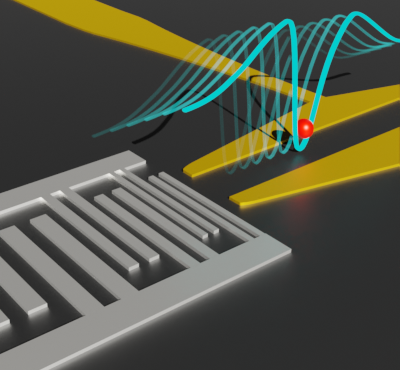

自己紹介
太田 俊輔 (Shunsuke Ota)
東京科学大学 工学院 電気電子系 小寺研究室 助教
量子技術、特に半導体量子ドットを用いた量子ビットや量子コンピュータの基盤技術の研究に従事しています。
ニュース
- 2026/04/01 東京科学大学 工学院 電気電子系 助教に着任しました。
- 2026/03/18 第47回応用物理学会論文奨励賞を受賞し、春季学術講演会 @Tokyoにて受賞記念講演を行いました。
- 2026/03/06 Leti Science Seminar @CEA (Grenoble, France) にて招待講演を行いました。
- 2026/02 共著論文2報が Japanese Journal of Applied Physics に掲載されました。
- 2025/12 1st International Workshop on Industrial-grade Ge Quantum Technology @Osakaに参加し、研究発表を行いました。
- 2025/07 The International Symposium on Quantum Science, Technology and Innovation 2025 @Osakaに参加し、研究発表を行いました。
- 2025/03 令和6年度手島精一記念研究賞（博士論文賞）を受賞しました。
- 2025/01 東京科学大学 特任助教に着任しました。
- 2025 共著論文が Appl. Phys. Lett. に掲載されました。
- 2024/09 第56回応用物理学会講演奨励賞を受賞し、秋季学術講演会 @Niigataにて受賞記念講演を行いました。
- 2024/04 東京工業大学 研究員に着任しました。
- 2024/03 博士（工学）の学位を取得しました。
- 2024/02 筆頭論文が Phys. Rev. Applied と Appl. Phys. Express に掲載されました。
経歴・研究歴
- 2026/4 – 現在 東京科学大学 助教
- 2025/1 – 2026/3 東京科学大学 特任助教
- 2024/4 – 2024/12 東京科学大学（旧東京工業大学） 研究員
- 2024/3 東京工業大学 工学部 電気電子系 博士後期課程 修了
- 2022/9 – 2022/12 トゥエンテ大学 (University of Twente, EEMCS, NanoElectronics Group) Guest researcher
- 2022/1 – 2022/2 フランス国立科学研究センター ネール研究所 (Institute Néel QuantECA, CNRS, France) Visiting scientist
- 2021/3 東京工業大学 工学部 電気電子系 修士課程 修了
- 2019/4 – 2024/3 産業技術総合研究所 計量標準総合センター 物理計測標準研究部門 量子電気標準研究グループ リサーチアシスタント
- 2019/3 東京工業大学 工学部 電気電子工学科 卒業
- 2014/3 私立海城高等学校 卒業
研究業績
学術雑誌等掲載論文
- R. Mizokuchi, R. Wada, R. Matsuoka, S. Ota, I. Yanagi, T. Mine, R. Tsuchiya, D. Hisamoto, H. Mizuno, T. Kodera. Improved readout accuracy of a silicon spin qubit via log-likelihood ratio, Japanese Journal of Applied Physics, 65, 02SP03 (2026).
- D. Zhang†, N. Negami†, R. Mizokuchi†, S. Ota, R. Wada, T. Kodera. Multi-bit state discrimination using machine learning for IQ-encoded spin-qubit readout, Japanese Journal of Applied Physics, 65, 05SP22 (2026). (†: contributed equally to this work)
- K. Fujiwara, S. Ota, T. Kodera, Y. Okazaki, N.-H. Kaneko, N. Jiang, Y. Niimi, S. Takada. Generation of a single-cycle surface acoustic wave pulse on LiNbO3 for application to thin-film materials, Appl. Phys. Lett. 127, 022406 (2025) [arXiv: 2507.02417].
- S. Ota, Y. Okazaki, S. Nakamura, T. Oe, H. Sellier, C. Bäuerle, N.-H. Kaneko, T. Kodera, S. Takada. Suppression of electromagnetic crosstalk by differential excitation for SAW generation, Appl. Phys. Express 17, 022002 (2024) [arXiv: 2312.15413].
- S. Ota, J. Wang, H. Edlbauer, Y. Okazaki, S. Nakamura, T. Oe, A. Ludwig, A. D. Wieck, H. Sellier, C. Bäuerle, N.-H. Kaneko, T. Kodera, S. Takada. On-demand single-electron source via single-cycle acoustic pulses, Phys. Rev. Applied 21, 024034 (2024) [arXiv: 2312.00274].
- J. Wang, H. Edlbauer, A. Richard, S. Ota, W. Park, J. Shim, A. Ludwig, A. D. Wieck, H.-S. Sim, M. Urdampilleta, T. Meunier, T. Kodera, N.-H. Kaneko, H. Sellier, X. Waintal, S. Takada & C. Bäuerle. Coulomb-mediated antibunching of an electron pair surfing on sound, Nature Nanotechnology 18, 721 (2023) [arXiv: 2210.03452].
- J. Wang*, S. Ota*, H. Edlbauer*, B. Jadot, P.-A. Mortemousque, A. Richard, Y. Okazaki, S. Nakamura, A. Ludwig, A. D. Wieck, M. Urdampilleta, T. Meunier, T. Kodera, N.-H. Kaneko, S. Takada, C. Bäuerle. Generation of a Single-Cycle Acoustic Pulse: A Scalable Solution for Transport in Single-Electron Circuits, Phys. Rev. X 12, 031035 (2022) [arXiv: 2208.00489]. (*: contributed equally to this work)
- H. Edlbauer*, J. Wang*, S. Ota*, A. Richard, B. Jadot, P.-A. Mortemousque, Y. Okazaki, S. Nakamura, T. Kodera, N.-H. Kaneko, A. Ludwig, A. D. Wieck, M. Urdampilleta, T. Meunier, C. Bäuerle, S. Takada. In-flight distribution of an electron within a surface acoustic wave, Appl. Phys. Lett. 119, 114004 (2021) [arXiv: 2107.09823]. (*: contributed equally to this work)
国際学会発表論文
- S. Ota, T. Fukuda, T. Toshimitsu, R. Mizokuchi, T. Kodera. Cryogenic Characterization of Commercial Heterojunction Bipolar Transistors as Current Amplifiers Toward Semiconductor Spin Qubit Readout, 1st International Workshop on Industrial-grade Ge Quantum Technology, Dec. 2025.
- R. Mizokuchi, R. Wada, R. Matsuoka, S. Ota, I. Yanagi, T. Mine, R. Tsuchiya, D. Hisamoto, H. Mizuno, T. Kodera. Log-Likelihood Ratio for Improving Accuracy in Silicon Spin Qubit Readout, 2nd International Workshop on Quantum Information Engineering (QIE2025), Oct. 2025.
- N. Negami, R. Mizokuchi, S. Ota, R. Wada, Z. Duanlian, T. Kodera. Multi-Bit State Classification via Machine Learning in IQ-Encoded Spin Qubit Readout, 2025 International Conference on Solid Devices and Materials (SSDM2025), Sept. 2025.
- R. Mizokuchi, R. Wada, R. Matsuoka, S. Ota, I. Yanagi, T. Mine, R. Tsuchiya, D. Hisamoto, H. Mizuno, T. Kodera. Improved readout accuracy of a silicon spin qubit via maximum likelihood estimation, 2025 International Conference on Solid Devices and Materials (SSDM2025), Sept. 2025.
- S. Ota, S. I. Ibad, C. Kondo, R. Mizokuchi, R. Wada, R. Matsuoka, I. Yanagi, T. Mine, R. Tsuchiya, D. Hisamoto, H. Mizuno, T. Kodera. Comparative evaluation of electron- and hole-properties in silicon quantum dots, The International Symposium on Quantum Science, Technology and Innovation 2025, July 2025.
- S. Ota, J. Wang, H. Edlbauer, Y. Okazaki, S. Nakamura, T. Oe, A. Ludwig, A.D. Wieck, T. Kodera, C. Bäuerle, S. Takada, N.-H. Kaneko. Crosstalk Effect for Acousto-Electric Quantized Current, 2023 International Conference on Solid State Devices and Materials (SSDM2023), B-2-04, Nagoya, Japan, September 6 (2023).
- S. Ota, J. Wang, H. Edlbauer, Y. Okazaki, S. Nakamura, A. Ludwig, A.D. Wieck, T. Kodera, C. Bäuerle, S. Takada, N.-H. Kaneko. On-demand Single-Electron Source with Acousto-Electric Pulses, 25th International Conference on Electronic Properties of Two-Dimensional Systems/21th International Conference on Modulated Semiconductor Structures (EP2DS-25/MSS-21 Joint Conference), 10A-2, Grenoble, France, July 13 (2023).
- S. Ota, J. Wang, H. Edlbauer, A. Richard, B. Jadot, P.-A. Mortemousque, Y. Okazaki, S. Nakamura, T. Kodera, N.-H. Kaneko, A. Ludwig, A.D. Wieck, M. Urdampilleta, T. Meunier, S. Takada, C. Bäuerle. Single-Electron Transport with Acousto-Electric Chirp Pulses, 24th International Conference on Electronic Properties of Two-Dimensional Systems/20th International Conference on Modulated Semiconductor Structures (EP2DS-24/MSS-20 Joint Conference), M-4-02, ALL-VIRTUAL Conference, November 2 (2021).
- S. Ota, S. Hiraoka, R. Mizokuchi, T. Kodera. Observation of bipolar Pauli spin blockade and the few-electron regime in a silicon linearly triple quantum dot, Topical Conference on Quantum Computing 2019 (TCQC2019), Kyoto, Japan, December 17-18 (2019).
- S. Ota, S. Hiraoka, R. Matsuoka, R. Mizokuchi, T. Kodera. Bipolar Pauli spin blockade in a silicon linearly coupled triple quantum dot, 2019 International Conference on Solid State Devices and Materials (SSDM2019), E-1-03, Nagoya, Japan, September 3 (2019).
総説・解説・著書
- 小寺哲夫, 太田俊輔, 「第3編 量子コンピューティング（ハードウェア編） 第4章 半導体型量子コンピューティング 第1節 発展の歴史、物理的基礎およびデバイス技術」, 量子技術イノベーションハンドブック (2026)
- 高田真太郎, 太田俊輔, 「基礎講座＋αの研究技術：表面弾性波で単一パルスを作る」 応用物理, 92巻 12号 p. 741-745 (2023).
招待講演
- S. Ota. Fundamental Technologies for Scalable Semiconductor Quantum Computing, Leti Science Seminar, CEA, Grenoble, France, March 6 (2026).
- 太田俊輔, 福田毅, 利光孝文, 溝口来成, 小寺哲夫. [第47回論文奨励賞受賞記念講演] 半導体量子ビット読み出しに向けたディスクリートヘテロ接合バイポーラトランジスタの極低温特性評価, 18p-S2_202-1, 第73回応用物理学会春季学術講演会, 東京科学大学, 東京, 2026年3月18日.
- 太田俊輔, 近藤知宏, 土屋龍太, 峰利之, 久本大, 水野弘之, 溝口来成, 米田淳, 小寺哲夫. [講演奨励賞受賞記念講演] バイポーラ型シリコン量子ドットの高周波反射測定, 18a-A32-2, 第85回応用物理学会秋季学術講演会, 朱鷺メッセ, 新潟, 2024年9月18日.
受賞
- 応用物理学会論文賞 応用物理学会論文奨励賞, 公益社団法人応用物理学会（2026年3月）
- 令和6年度手島精一記念研究賞（博士論文賞）, 国立大学法人東京科学大学（2025年3月）
- 第56回応用物理学会講演奨励賞, 公益社団法人応用物理学会（2024年9月）
プレスリリース
学位論文
- Surface Acoustic Wave-Driven Single-Electron Transport for Quantum Information Processing（東京工業大学、令和6年3月）
教育・助成金等
教育・組織運営
学内講義
- 2026年度 – 現在 工学リテラシーI (XEG.B101)
- 2026年度 – 現在 電気電子工学実験第三 「通信伝送」 (EEE.L311, EEE.L312)
学内委員等
- 2026年度 – 現在 超スマート社会卓越教育院 (WISE-SSS) 若手VI教員
- 2024年度 – 2025年度 超スマート社会卓越教育院 (WISE-SSS) 準プログラム担当者
助成金等
-
2026年度 笹川科学研究助成
研究課題名：IV族半導体を用いた核スピンフリー環境下でのアンドレーエフ束縛状態の制御と評価
役割：研究代表者 -
2024年度 – 2025年度 科学研究費助成事業 研究活動スタート支援
研究課題名：半導体量子ドットを用いたニューロリアルデバイスの開発
役割：研究代表者
ポートフォリオ
自身でデザインした画像や撮影した写真
半導体チップ概念図

表面弾性波デバイス概念図

Thái Văn Lung Quận 1
Marseille

井の頭公園
© Shunsuke Ota.